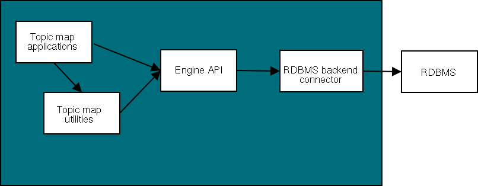
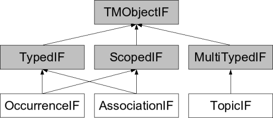
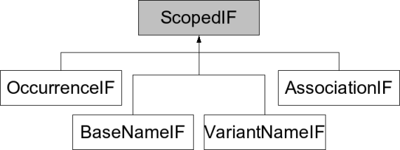
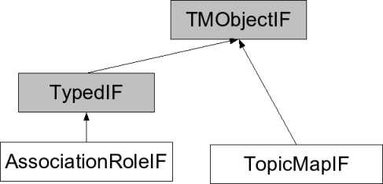

| Published by: | Ontopia |
|---|---|
| Date: | 2013-08-01 |
| Version: | 5.3.0 |
|
This Developer's Guide is an introduction to the Ontopia Topic Maps Engine, intended for developers who will be using the engine API to develop Topic Maps applications. The main features of the API are described, together with some background information to help developers understand the intended use of the API facilities.
Additional information about the core Topic Maps API interfaces can be found in the javadoc. In addition to the core Topic Maps API, utilities are provided for working with and performing various operations on a topic map, and for handling objects which implement the API interfaces. These utilities are not so fully documented in the javadoc; this guide gives an overview which will help developers understand what utilities are available and how to use them.
Familiarity with Topic Maps concepts, and the Java platform, is assumed in this guide.
The Ontopia Topic Maps Engine is the heart of Ontopia, on which all the other components are based. The job of representing, storing, and making available topic maps to the rest of the product suite is its job, and without this crucial function none of Ontopia can do its work.
In addition to providing a service internally within Ontopia the engine also provides a rich API against which Topic Maps-based applications may be built. However, despite the centrality of the engine within the product suite, the engine should not be used for all kinds of application development. For example, for web applications Ontopia provides the Navigator and Web Editor Frameworks, which are much more appropriate for this purpose.
Ontopia also includes the Query Engine, which implements the tolog query language. For retrieving information from the topic maps the query language is far better suited than the API. It makes the task enormously much easier, while at the same time enabling far better performance, since the query engine can take shortcuts not available to applications working through the API.
The Topic Maps Engine and the Ontopia Knowledge Suite have been designed to support many different deployment scenarios. The most common, building an application on the engine using the RDBMS backend, is shown in the figure below.

Figure 1. The engine architecture
The diagram shows the overall working relationships between a Topic Maps application, i.e. what you as a developer will build, the engine API, the utility packages, and a storage backend. The Topic Maps application is expected to make direct use of the engine API and the Topic Maps utilities.
The rest of this document concentrates on the engine API and the topic map utilities, with a brief overview of the general utilities.
The heart of the engine is the net.ontopia.topicmaps.core package. This package defines the interfaces of the objects that represent the information in a topic map, such as the topic map itself, topics, occurrences, associations and so on. These interfaces are commonly referred to as the core interfaces. There is detailed documentation for these interfaces in the javadoc. When reading the javadoc, remember that the 'IF' suffix is used to indicate an interface, throughout the Ontopia product suite; for example, the common interface for a topic object is called TopicIF. This core API accommodates concepts from various versions of the topic map standards; these are clearly indicated in the javadoc.
The engine contains several implementations of the core interfaces, each in a separate package below the net.ontopia.topicmaps.impl package. There is one implementation of the core interfaces for each storage backend, and there are also some implementations that do not use a storage backend. (We will return to these later.) All these implementations should behave identically, except for their performance characteristics, which will necessarily be different. Please note that all code that uses the engine should use variables and arguments declared to use the interfaces in net.ontopia.topicmaps.core, since this makes the code independent of the specific implementation used. In particular, this allows an application to be piloted using the in-memory implementation, then brought into production using a database back-end, without any changes to the application code.
Most items, that is, interfaces, classes and methods, in the javadoc have an initial tag attached to them explaining the status of the documented item. The tags currently used are:
This section briefly lists the different Java packages that the Ontopia Engine consists of. Introductions to the use of each package follow later.
This package contains common interfaces for indexes which provide optimized look-up of information held in a topic map, such as all topics of a given type, whether a topic is used as an association type anywhere and so on. This package contains only interfaces implemented elsewhere; as with the core engine API, each specific implementation uses these interfaces, so that a developer need only write to the common, repository-independent API.
Ontopia is participating in the development of a standardized Topic Map Query Language (TMQL), which in due course will provide much the same functionality as these indexes do. In the meantime, however, the indexes are the preferred way to do such lookups.
Ontopia now supports TMAPI 2.0, which is a de-facto standard Java API for Topic Maps engines. The API is supported by wrapping the Ontopia core interfaces in TMAPI interface implementations.
To use the TMAPI support, all that's needed is to put the ontopia.jar file on your CLASSPATH and the TopicMapSystemFactory class will automatically detect Ontopia and start using it.
If you need direct access to it, the Ontopia implementation of the TopicMapSystemFactory is called net.ontopia.topicmaps.impl.tmapi2.TopicMapSystemFactory.
The rest of this document will describe the Ontopia native interfaces. If you would like to use the TMAPI interfaces instead, please see the TMAPI 2.0 web site for documentation of TMAPI 2.0.
The TopicMapStoreIF interface defines the services provided by a topic map storage manager. To make a topic map, wherever it may be stored, the way to proceed is first to instantiate the appropriate topic map store manager (that is, whatever TopicMapStoreIF implementation you are using). After creating the storage manager, call its getTopicMap method to get the topic map object that is managed by it.
Note that there is always one topic map per topic map store object. This is so because the topic map store object only represents the connection between the topic map object and its storage, and not the storage repository itself.
Below is a simple example program that creates an empty topic map in the in-memory implementation, which is also known as the basic implementation.
import net.ontopia.topicmaps.core.TopicMapIF;
import net.ontopia.topicmaps.impl.basic.InMemoryTopicMapStore;
public class Hello {
public static void main(String[] args) {
InMemoryTopicMapStore store = new InMemoryTopicMapStore();
TopicMapIF tm = store.getTopicMap();
System.out.println("Hello, world!");
System.out.println("I have a topic map with " + tm.getTopics().size() +
" topics!");
}
}
The source code example above shows a simple Java program that instantiates an InMemoryTopicMapStore and gets a topic map from it. Since this topic map store is not connected to any permanent storage the returned topic map will be empty.
Below is a list of all the TopicMapStoreIF implementations in the engine:
To read a topic map from an XTM file you use the XTMTopicMapReader class in the net.ontopia.topicmaps.xml package. Usage is simple: bind the reader to a file in the constructor, then call the read() method to get the topic map. The reader will then automatically create an InMemoryTopicMapStore for you and read the topic map into an empty topic map object.
import java.io.File;
import net.ontopia.topicmaps.core.TopicMapIF;
import net.ontopia.topicmaps.xml.XTMTopicMapReader;
public class Hello2 {
public static void main(String[] args) {
try {
XTMTopicMapReader reader = new XTMTopicMapReader(new File(args[0]));
TopicMapIF tm = reader.read();
System.out.println("Hello, world!");
System.out.println("I have a topic map with " + tm.getTopics().size() +
" topics!");
}
catch (java.io.IOException e) {
System.err.println("Error reading topic map: " + e);
}
}
}
Above is a new version of the previous example program. This example uses the XTMTopicMapReader class to load an XTM file from disk into an object structure that can then be accessed. The reader takes care of creating an XML parser, a topic map store and so on. (Note that to get this example to compile you may have to put crimson.jar on your CLASSPATH explicitly.)
When loading XTM files the reader will load all topic maps referred to using mergeMap elements and also topic maps referred to by the topicRef element. (For explanations of what mergeMap and topicRef elements do, see the XTM 1.0 specification.) It will also automatically merge topics as described by annex F of the XTM 1.0 specification.
Some flexibility in resolving references to external topics and topic maps is provided through the ExternalReferenceHandlerIF interface. Applications can implement this interface to instruct the reader whether to read in specific external references or not and it can also remap references to new URIs, thus overriding the URIs given in the topic map document.
Note that the readers also cater to some more specialized situations. If you want to read the XTM file into a specific topic map object you do this with the TopicMapImporterIF.importInto method. If you have an XML document containing several topic maps, that is, with several topicMap elements, you can read in all the topic maps at the same time with the readAll method.
Any topic map that is held in the engine can be exported using the XTMTopicMapWriter class in the net.ontopia.topicmaps.xml package. When this class has been configured with a java.io.Writer and a character encoding the write(TopicMapIF topicmap) can be called to write out the topic map to the Writer.
Note that this class very carefully ensures that the character encoding used in the XML file that is written out is known, and also labels the file with the encoding used. The default encoding is UTF-8, which is a convenient default that is both backwards-compatible with ASCII and at the same time can encode any Unicode character, but this can be overridden by the client code. Note that if the topic map contains characters that cannot be encoded using the chosen encoding those characters will be lost.
The LTM syntax is a compact and easy-to-edit text syntax for topic maps designed by Ontopia. This syntax is supported by the Ontopia Topic Map Engine, and can be used just like the other topic map syntaxes.
The engine can export and import a number of different topic map syntaxes (XTM, the ISO 13250 HyTM syntax, and LTM), as well as RDF. If you want your application to be able to import files by guessing the format from the file extension, you can use the net.ontopia.topicmaps.utils.ImportExportUtils to create the reader and writer instances for you. This can make your code both simpler and more flexible at the same time.
For further details, see the javadoc for ImportExportUtils class, as well as the net.ontopia.topicmaps.utils.ltm and net.ontopia.topicmaps.utils.rdf packages.
To illustrate the information in the last few sections we will write a simple program that converts topic maps written in LTM syntax to XTM. Below is the source code to this command-line tool.
import java.io.File;
import net.ontopia.topicmaps.core.*;
import net.ontopia.topicmaps.xml.XTMTopicMapWriter;
import net.ontopia.topicmaps.utils.ltm.LTMTopicMapReader;
public class LTM2XTMConverter {
public static void main(String [] args) {
if (args.length != 2) {
usage();
System.exit(1);
}
try {
convert(args[0], args[1]);
}
catch (java.net.MalformedURLException e) {
System.err.println(e);
System.exit(2);
}
catch (java.io.IOException e) {
System.err.println(e);
System.exit(2);
}
}
private static void usage() {
System.out.println("java LTM2XTMConverter <in> <out>");
System.out.println("");
System.out.println(" Reads a topic map and writes it out in XTM form");
System.out.println(" <in>: file name of LTM file");
System.out.println(" <out>: file to write XTM to");
System.out.println("");
}
private static void convert(String ltm, String xtm)
throws java.io.IOException, java.net.MalformedURLException {
TopicMapIF source;
source = new LTMTopicMapReader(new File(ltm)).read();
new XTMTopicMapWriter(xtm).write(source);
}
}
The source code of the program should be simple enough to understand. The only part that is specific to the Ontopia Topic Map Engine is the convert method, which reads the topic map file into a topic map object, and then writes the object back out. It really is no harder than this.
The main interfaces of the net.ontopia.topicmaps.core package are the ones in the diagram below. The arrows go from base interfaces to derived interfaces that extend the base interfaces. The gray boxes represent interfaces that are never implemented directly by a class; they represent pieces of functionality common to several interfaces.

Figure 2. The main interfaces of the core package
The three most important interfaces are: TopicIF, representing topics, AssociationIF, representing associations and OccurrenceIF, representing occurrences.
The TMObjectIF interface is the base interface for all interfaces in the core package and all data classes implement this interface. The ScopedIF interface is used by classes that represent topic map constructs that have scope, in this case AssociationIF and OccurrenceIF.
There is a similar interface for typed objects: TypedIF for objects which can have a single type.
Note that ScopedIF, TypedIF are both derived from TMObjectIF.

Figure 3. The scoped interfaces
The interfaces shown here are all the ones which extend ScopedIF, which in turn extends TMObjectIF. (Note that TopicIF and TopicMapIF for historical reasons also do; their extension of ScopedIF is deprecated, and will disappear.)

Figure 4. The rest of the interfaces
Left over are only two interfaces; the TopicMapIF interface, which directly extends TMObjectIF, and AssociationRoleIF, which represents the roles played by topics participating in associations (in XTM terminology: topics which are members of associations). For every topic participating in an association there is an AssociationRoleIF object representing the connection point between the topic and the association.
Central to topic maps is the concept of resources, data streams which can contain information of any kind and in any format. Topic maps can refer to resources in one of two ways: by using URIs or by including them inline.
In the engine resources are catered for through the interfaces in the net.ontopia.infoset.core package. The central concept in that package is that of a locator, which is a string using a particular notation to refer to an information resource. The default notation is URI, but any locator syntax can be implemented.
The main interface is the LocatorIF interface, which represents a locator. It has a notation property, which will be "URI" for URIs, and an address property, which will contain the locator itself. The LocatorIF implementation representing URIs is found in the URILocator class in the net.ontopia.infoset.impl.basic package.
The design of the locator system considers locators to be primitive values, in the same way that Java considers Strings to be primitive values. A locator object may therefore never change its value; instead, a new object must be substituted if a locator property is to be changed. Similarly, all LocatorIF implementations must implement the hashCode, equals and toString methods.
It should also be noted that all locators are canonicalized to a canonical syntactic form on creation and also absolutized. A LocatorIF object will therefore always hold an absolute locator in canonical form, which ensures that two logically equivalent locator objects will always compare as equal. This has the effect that when a topic map is loaded from file, all locators in that topic map will be absolute locators. The resolveAbsolute method on LocatorIF should be used to create absolute locators from ones that are relative to a base locator.
To illustrate how to work with the core interfaces, here is an example of a small application that establishes contact with a topic map, then prints out all the topics in that topic map with a specific topic type. The application runs from the command-line and takes two arguments: the file name of the XTM document and the XML ID of the topic type.
import java.io.File;
import java.io.IOException;
import java.util.Iterator;
import java.util.Collection;
import net.ontopia.infoset.core.LocatorIF;
import net.ontopia.topicmaps.core.*;
import net.ontopia.topicmaps.xml.XTMTopicMapReader;
public class TopicsOfType {
public static void main(String[] args) {
try {
printTopicsOfType(new File(args[0]), args[1]);
} catch (IOException e) {
System.err.println("ERROR reading topic map: " + e);
}
}
public static void printTopicsOfType(File tmfile, String typeId)
throws IOException {
XTMTopicMapReader reader = new XTMTopicMapReader(tmfile);
TopicMapIF tm = reader.read();
TopicIF topicType = getTopicByXMLId(tm, typeId);
if (topicType == null) {
System.err.println("ERROR: No such topic: " + typeId);
return;
}
Iterator it = tm.getTopics().iterator();
while (it.hasNext()) {
TopicIF topic = (TopicIF) it.next();
Collection types = topic.getTypes();
if (types.contains(topicType))
System.out.println(topic);
}
}
private static TopicIF getTopicByXMLId(TopicMapIF tm, String id) {
TopicMapStoreIF store = tm.getStore();
LocatorIF loc = store.getBaseAddress().resolveAbsolute("#" + id);
return (TopicIF) tm.getObjectByItemIdentifier(loc);
}
}
This simple application starts by creating an XTMTopicMapReader, which it binds to the file it would like to read, and then retrieves the topic map. Then, it looks up the type topic by its given ID, checks whether a topic was actually found and then iterates over all the topics in the topic map, printing those that have the required type.
Note that it is not possible to look a topic up by its XML ID directly, because since the topics in a single topic map may come from several different XML documents there is no guarantee that a topic will have a unique ID. Instead, we associate the URIs of the elements that gave rise to the topics with the topics in their itemIdentifiers properties.
The getTopicByXMLId method exploits this by creating a URL from the base address of the topic map and the ID given on the command-line. This means that if the topic appeared in the XML document named on the command-line only its ID need to be given, but if it appeared outside that document the entire URI of the topic must be given. This simple version of the application does not handle this case.
Notice how this example only uses the core API, so that it can easily be used with topic maps stored in databases or any other storage implementation. Note also how awkward it is, given the comparative simplicity of what it is trying to achieve. For this task, as for most tasks, it would be far better to use tolog.
When run on a topic map the example will produce output like that shown below. In this case it has been told to print all the topics of type "script" in the "scripts and languages" topic map that comes with the engine distribution.
[basic.Topic, 0 {URI|file:/home/larsga/tmp/oks-1.0/samples/i18n.xtm#id209} ]
[basic.Topic, 1 {URI|file:/home/larsga/tmp/oks-1.0/samples/i18n.xtm#id203} ]
[basic.Topic, 2 {URI|file:/home/larsga/tmp/oks-1.0/samples/i18n.xtm#id60} ]
[basic.Topic, 3 {URI|file:/home/larsga/tmp/oks-1.0/samples/i18n.xtm#id221} ]
[basic.Topic, 4 {URI|file:/home/larsga/tmp/oks-1.0/samples/i18n.xtm#id166} ]
[basic.Topic, 5 {URI|file:/home/larsga/tmp/oks-1.0/samples/i18n.xtm#id271} ]
[basic.Topic, 6 {URI|file:/home/larsga/tmp/oks-1.0/samples/i18n.xtm#id268} ]
[basic.Topic, 7 {URI|file:/home/larsga/tmp/oks-1.0/samples/i18n.xtm#id80} ]
[basic.Topic, 8 {URI|file:/home/larsga/tmp/oks-1.0/samples/i18n.xtm#id51} ]
[basic.Topic, 9 {URI|file:/home/larsga/tmp/oks-1.0/samples/i18n.xtm#id20} ]
[basic.Topic, 10 {URI|file:/home/larsga/tmp/oks-1.0/samples/i18n.xtm#id173} ]
[basic.Topic, 11 {URI|file:/home/larsga/tmp/oks-1.0/samples/i18n.xtm#id22} ]
[basic.Topic, 12 {URI|file:/home/larsga/tmp/oks-1.0/samples/i18n.xtm#id140} ]
[basic.Topic, 13 {URI|file:/home/larsga/tmp/oks-1.0/samples/i18n.xtm#id69} ]
[basic.Topic, 14 {URI|file:/home/larsga/tmp/oks-1.0/samples/i18n.xtm#id139} ]
[basic.Topic, 15 {URI|file:/home/larsga/tmp/oks-1.0/samples/i18n.xtm#id100} ]
[basic.Topic, 16 {URI|file:/home/larsga/tmp/oks-1.0/samples/i18n.xtm#id177} ]
[basic.Topic, 17 {URI|file:/home/larsga/tmp/oks-1.0/samples/i18n.xtm#id213} ]
[basic.Topic, 18 {URI|file:/home/larsga/tmp/oks-1.0/samples/i18n.xtm#id150} ]
[basic.Topic, 19 {URI|file:/home/larsga/tmp/oks-1.0/samples/i18n.xtm#id174} ]
[basic.Topic, 20 {URI|file:/home/larsga/tmp/oks-1.0/samples/i18n.xtm#id95} ]
[basic.Topic, 21 {URI|file:/home/larsga/tmp/oks-1.0/samples/i18n.xtm#id220} ]
[basic.Topic, 22 {URI|file:/home/larsga/tmp/oks-1.0/samples/i18n.xtm#id125} ]
[basic.Topic, 23 {URI|file:/home/larsga/tmp/oks-1.0/samples/i18n.xtm#id36} ]
[...]
Each topic is here printed using the toString method, and that is, as you can see, not a great help in this case. The problem is that all the information it provides is an automatically generated ID and the item identifier of the topic. We will improve on this result later, however.
One part of the API that many find confusing at first is the representation of topic names and variants. As mentioned earlier, both are represented by objects that implement the TopicNameIF interface, but variant names have their own interface derived from this, which is called VariantNameIF. In both cases, the variants property contains the variant children of the object.
In the XTM 1.0 syntax the variant element name does not have a scope child, but instead contains a parameters child. However, parameters has the same semantics as scope, and so what is contained in the scope property of a variant name is its parameters.
Quite often one may want to either add data to an existing topic map, or to process data in some other format to automatically generate a topic map from it. To do this one needs to create new topic map objects and insert them into a topic map. If no topic map exists already one will also have to be created.
To create a topic map in the in-memory implementation create an instance of the net.ontopia.topicmaps.impl.basic.InMemoryTopicMapStore class. This class has a constructor with no arguments. Once that is done you have a topic map object, and are ready to start filling it with data. You will not be able to do this by instantiating topic map objects from the same package directly. The reason is that by doing so you are tying your code directly to one engine implementation, and by letting you do so we would be limiting our own freedom in terms of implementation strategies.
Instead, the solution is to use the TopicMapBuilderIF object available from the TopicMapIF interface. The builder will let you create new topic map objects, and offers you some convenience methods for creating and configuring objects in a single method call, which makes building a bit easier.
Many methods in the API take LocatorIF arguments, and it may not be obvious how to create such objects. A straightforward approach is to use the constructor on the net.ontopia.infoset.impl.basic.URILocator class and pass in the URI as a string. Another approch is to use the net.ontopia.topicmaps.utils.QNameRegistry class to create the locators via qnames (such as "tmdm:topic-name").
Below is an example program that creates a topic map with topics for the numbers 1-10 and exports it to XTM format.
import java.io.File;
import java.io.IOException;
import net.ontopia.topicmaps.core.*;
import net.ontopia.topicmaps.impl.basic.InMemoryTopicMapStore;
import net.ontopia.topicmaps.xml.XTMTopicMapWriter;
public class Generate {
public static void main(String[] args) throws IOException {
TopicMapStoreIF store = new InMemoryTopicMapStore();
TopicMapIF topicmap = store.getTopicMap();
TopicMapBuilderIF builder = topicmap.getBuilder();
for (int ix = 1; ix < 11; ix++) {
// add topic to topic map
TopicIF topic = builder.makeTopic(topicmap);
// builder adds topic name to topic and sets name string
builder.makeTopicName(topic, Integer.toString(ix));
}
// having created the topic map we are now ready to export it
new XTMTopicMapWriter("numbers.xtm").write(topicmap);
}
}
Note that an alternative approach when creating topic maps is to use the LTM format to create small fragments which can be imported into the topic map. This can be much simpler than using the API directly. Below is an example that does the same thing using this approach.
import java.io.StringReader;
import java.io.IOException;
import net.ontopia.infoset.impl.basic.URILocator;
import net.ontopia.topicmaps.core.*;
import net.ontopia.topicmaps.utils.ltm.LTMTopicMapReader;
import net.ontopia.topicmaps.xml.XTMTopicMapWriter;
public class GenerateLTM {
public static void main(String[] args) throws IOException {
String seed = "[number = \"Number\"]";
URILocator base = new URILocator("http://www.example.com");
LTMTopicMapReader reader = new LTMTopicMapReader(new StringReader(seed), base);
TopicMapIF topicmap = reader.read();
for (int ix = 1; ix < 11; ix++) {
String fragment = "[t" + ix + " : number = \"" + ix + "\"]";
reader = new LTMTopicMapReader(new StringReader(fragment), base);
reader.importInto(topicmap);
}
// having created the topic map we are now ready to export it
new XTMTopicMapWriter("numbers.xtm").write(topicmap);
}
}
In an example this simple the code isn't much simpler (though note that the LTM example does more than the API example), but in a real example the difference can be quite substantial once you have utility methods to read in the LTM. (And if you use a scripting language like Jython the difference can become dramatic, since it's much easier to produce the string fragments in such a language.)
This section provides additional information about the topic map utility package (net.ontopia.topicmaps.utils). The discussions below not only provide information about individual utilities, but hopefully also insight into the general design and coding style used throughout the Ontopia code.
In general, the philosophy behind the design of the engine has been for the core interfaces to only represent the data in a topic map and to leave all other functionality to be built on top of these core interfaces. This means that functionality like association traversal, merging, information lookup and so on has all been placed in packages outside the core interfaces. The implementations of these utilities are independent of specific topic map implementations where possible, and the interfaces to the functionality are always independent of the particular implementation used.
Stringifiers are objects which implement the StringifierIF interface in the net.ontopia.utils package. This means that it can take any object and return a string value somehow derived from the state of this object.
The most common use of stringifiers is to extract the name of a topic. This operation is actually quite complex, since topic maps allow topics to have arbitrarily many names of different kinds. In the net.ontopia.topicmaps.utils package there is a class named TopicStringifiers with three different methods that create stringifiers for topics. These stringifiers can then be used to extract the names of any topic. (See the javadoc for further details.)
This allows us to extend our previous TopicsOfType example application to print the names of topics, and the source code of this improved version is given below.
import java.io.File;
import java.io.IOException;
import java.util.Iterator;
import java.util.Collection;
import net.ontopia.infoset.core.LocatorIF;
import net.ontopia.topicmaps.core.*;
import net.ontopia.topicmaps.utils.ImportExportUtils;
import net.ontopia.topicmaps.utils.TopicStringifiers;
import net.ontopia.utils.StringifierIF;
public class TopicsOfType2 {
public static void main(String[] args) {
try {
printTopicsOfType(new File(args[0]), args[1]);
} catch (IOException e) {
System.err.println("ERROR reading topic map: " + e);
}
}
public static void printTopicsOfType(File tmfile, String typeId)
throws IOException {
TopicMapReaderIF reader = ImportExportUtils.getReader(tmfile);
TopicMapIF tm = reader.read();
TopicIF topicType = getTopicByXMLId(tm, typeId);
if (topicType == null) {
System.err.println("ERROR: No such topic: " + typeId);
return;
}
StringifierIF stringifier = TopicStringifiers.getDefaultStringifier();
Iterator it = tm.getTopics().iterator();
while (it.hasNext()) {
TopicIF topic = (TopicIF) it.next();
Collection types = topic.getTypes();
if (types.contains(topicType))
System.out.println(stringifier.toString(topic));
}
}
private static TopicIF getTopicByXMLId(TopicMapIF tm, String id) {
TopicMapStoreIF store = tm.getStore();
LocatorIF loc = store.getBaseAddress().resolveAbsolute("#" + id);
return (TopicIF) tm.getObjectByItemIdentifier(loc);
}
}
This new and improved version now produces the output below (for the same topics that the previous version printed). Note that these names are all basenames in the unconstrained scope, since these are the default names for the topics.
Telugu script Bengali script Hangul Tamil script Cyrillic Gurmukhi Kannada Gujarati script Mkhedruli Arabic script Oriya script Thai script Osmanya Divehi Burmese script Chieng Mai Sinhalese Greek Latin script Tibetan script Mongolian script Hiragana Malayalam script Kaithi
The logging support in the engine is based on the Simple Logging Facade for Java (SLF4J), which makes it possible to use any logging tool supported by SLF4J for the actual logging. By default, Ontopia uses log4j, an open source logging package developed as part of the Jakarta Apache project. For the engine to properly log its runtime messages log4j needs to be configured. If it is not properly configured the first log statement will output an error message like the following to the console.
log4j:ERROR No appenders could be found for category (net.ontopia.topicmaps.xml.AbstractTopicMapContentHandler). log4j:ERROR Please initialize the log4j system properly.
To avoid this problem one needs to configure log4j properly. The easiest way to do this and get a sensible default is to call the configure method of the org.apache.log4j.BasicConfigurator class. You can also use the PropertyConfigurator class to load a property file with the log4j configuration. Given the right import statements, the code would go something like this:
BasicConfigurator.configure();
PropertyConfigurator.configure("log4j.properties");
To learn how log4j works and other mechanisms for configuring logging see the log4j manual. In order to switch to a different logging engine than log4j, all that's necessary is to replace the jar file that binds SLF4J to log4j with one that binds to another logging engine. See the SLF4J manual for further details.
More complete documentation of the logging conventions used by the engine and recommendations for how to configure logging will be added later. If you need information on this, please send an email to support@ontopia.net.
Some applications may want to be informed when changes are made to the topic map, and the event API enables this by allowing applications to register in order to receive method callbacks on changes to the topic map. The API is in the net.ontopia.topicmaps.core.events, which contains an interface event listeners must implement (TopicMapListenerIF) and a class for registering listeners (TopicMapEvents).
At the moment there are three events: topic added, topic modified and topic deleted. The API will be extended with support for more events as these are needed.
A simple example command-line application using the event API is given below.
import net.ontopia.topicmaps.core.TopicIF;
import net.ontopia.topicmaps.core.TMObjectIF;
import net.ontopia.topicmaps.core.TopicMapIF;
import net.ontopia.topicmaps.core.TopicMapBuilderIF;
import net.ontopia.topicmaps.core.events.TopicMapEvents;
import net.ontopia.topicmaps.core.events.AbstractTopicMapListener;
import net.ontopia.topicmaps.core.events.TopicMapListenerIF;
import net.ontopia.topicmaps.entry.TopicMapReferenceIF;
import net.ontopia.topicmaps.entry.StoreFactoryReference;
import net.ontopia.topicmaps.utils.DeletionUtils;
import net.ontopia.topicmaps.utils.SameStoreFactory;
import net.ontopia.topicmaps.utils.ImportExportUtils;
public class EventTest {
public static void main(String[] argv) throws java.io.IOException {
// import the topic map, whichever one it is
TopicMapIF tm = ImportExportUtils.getReader(argv[0]).read();
// the API requires a reference, so we have to perform some extra
// steps here; in web applications this is easy (see event API
// javadoc)
SameStoreFactory ssf = new SameStoreFactory(tm.getStore());
TopicMapReferenceIF ref = new StoreFactoryReference("test", "test", ssf);
// register to listen for events
TestListener listener = new TestListener();
TopicMapEvents.addTopicListener(ref, listener);
// get the store through the reference so the listener is registered
ref.createStore(false);
// let's add a topic
System.out.println("Off we go");
TopicMapBuilderIF builder = tm.getBuilder();
TopicIF newbie = builder.makeTopic(tm);
System.out.println("Let's name this topic");
builder.makeTopicName(newbie, "Newbie topic");
// then let's remove it
System.out.println("And now, the exit");
DeletionUtils.remove(newbie);
System.out.println("Goodbye, short-lived topic");
}
// ----- Listener
static class TestListener extends AbstractTopicMapListener {
public void objectAdded(TMObjectIF snapshot) {
System.out.println("Topic added: " + snapshot.getObjectId());
}
public void objectModified(TMObjectIF snapshot) {
System.out.println("Topic modified: " + snapshot.getObjectId());
}
public void objectRemoved(TMObjectIF snapshot) {
System.out.println("Topic removed: " + snapshot.getObjectId());
}
}
}
The result of running it on the command-line is shown below:
[larsga@dhcp-98 tmp]$ java EventTest bkclean.xtm Off we go Topic added: 3409 Let's name this topic Topic modified: 3409 Topic modified: 3409 And now, the exit Topic removed: 3409 Goodbye, short-lived topic
Pay careful attention to the order in which the lines appear in the output, and you'll see that the topic added event occurs before the makeTopic method returns. There are some consequences of this, but before we go into them you should note that the in-memory and RDBMS implementations behave differently on this point, as described below.
In the in-memory implementation events are dispatched immediately as we're effectively running in auto-commit mode. For the add event this means that events will arrive before anything is known about the topic except the object ID. That is, if identities or names are added, they haven't been added yet, which can cause difficulties. Note that this behaviour can result in multiple topic modified events.
In the RDBMS implementation events are dispatched when the transaction is committed, because before the commit it is not yet known whether the change is permanent. This means that topics will typically arrive with at least a basic set of information attached, which makes things easier. Only one topic modified event should be issued per topic per transaction.
The one thing you can rely on always getting is the object ID of the topic.
Another consideration to note is that the objects you receive through the event API are not the same objects that exist in the topic map itself. This is for two reasons. The first is that deleted objects contain no useful information, and so passing them through the event API is not very helpful. The second is that the event API does not know which transaction (if any) the listeners are operating in, and so it needs to avoid making assumptions about this. Therefore, the object passed through the callbacks are dead snapshot objects that live outside any transaction. The object graph can be traversed a little way out from the initial topic, but will soon stop in stub objects.
The way to handle this is to use the object IDs to look up the corresponding objects in the topic map in order to get the complete information about them.
You can choose whether to implement TopicMapListenerIF directly or subclass AbstractTopicMapListener. Subclassing is recommended as this is more future-proof as any new methods that gets added to the listener interface will then be automatically be picked up by your listener implementation. The advantage is that you then don't have to extend and recompile the class before a software upgrade. The abstract listener class implements all event methods, but none of them do anything.
The net.ontopia.topicmaps.entry package contains interfaces and classes that are very useful for applications that wants to work with topic maps found in different kinds of locations. This section provides more information on this package.
The entry architecture itself is very simple. It contains two interfaces: TopicMapSourceIF and TopicMapReferenceIF.
A topic map source is used to locate a collection of topic maps, topic map references to be presice. The source will look in a place that is specific to each implementation of the interface and generate a list of the topic maps to be found there. The location can be a database, a directory on disk or somewhere else. The TopicMapSourceIF interface has only one method, getReferences, which returns the references that was found in the location(s) known to the source.
Each of the topic map references (that is, TopicMapReferenceIF objects) is a reference to a topic map store, and thus also indirectly to a topic map. You can ask the reference for a new topic map store instance by calling the createStore(boolean) method. The store is not open by default. This avoids unnecessary use of resources like database connections and memory.
The rationale for having a separate topic map reference object is that applications need to be able to work with available topic maps without actually creating any transactions for the individual topic maps.
A topic map reference has two additional properties: id and title. Ids can be used to identify individual references and titles gives the application labels usable for display. The title property is useful, since it allows applications to get a display name without accessing the topic map itself. Where the title comes from is up to the reference implementation to decide.
To make this discussion a bit more complete we will now develop an example that shows how to use these interfaces. The net.ontopia.topicmaps.xml.XTMPathTopicMapSource class is an implementation of TopicMapSourceIF that is capable of locating and retrieving references to XTM files. It searches a directory for files matching a given filter.
The following code snippet uses an XTMPathTopicMapSource to locate XTM files (with the suffix .xtm), in the /ontopia/topicmaps directory. The first reference is retrieved and resolved to get at the actual topic map object.
// Create and configure the source
XTMPathTopicMapSource source = new XTMPathTopicMapSource();
source.setPath("/ontopia/topicmaps");
source.setSuffix(".xtm");
// Retrieve all the references
Collection refs = source.getReferences();
System.out.println(refs.size() + " topicmap references found.");
// Resolve the first reference
TopicMapReferenceIF ref = (TopicMapReferenceIF) refs.iterator().next();
// Get the topic map
TopicMapIF topicmap = ref.createStore(false).getTopicMap();
In the entry package there is a utility class called XMLConfigSource, which can be useful when building topic map applications. XMLConfigSource is an implementation of TopicMapSourceIF, which reads an XML file containing other source configurations.
Applications using this class is able to separate out the source configurations, so that applications don't have to be updated every time new sources become available. See the javadoc of net.ontopia.topicmaps.entry.XMLConfigSource for complete documentation.
The TopicMapSourceIF interface provides a rather awkward interface to the topic maps it holds, as it only lets you iterate over the topic maps in sequence. The TopicMapRepositoryIF, on the other hand, wraps the TopicMapSourceIF to provide a more convenient interface. Using this, you can add as many sources as you want, to be managed by the repository. You can look the references up by reference key, refresh all your sources at the same time, and so on.
Although the interfaces for accessing and modifying topic maps are designed to handle transactions correctly this does not mean that all implementations are transactional. In particular, the in-memory topic map implementation is not transactional, and unless you are using the RDBMS backend, this is the implementation you will be working with. This means that although you can modify the topic maps the commit and rollback methods have no effect.
During development of the engine, a number of policies were decided on in order to deal with the many problematic aspects of maintaining topic maps as object structures. Some of these policies are actively maintained by the engine, others are just design decisions made, which developers using the engine should be aware of. This section contains the only documentation of these policies, since there is no natural place to keep this documentation in the javadoc.
Deleting objects from a topic map object structure is difficult because topic maps are so strongly interconnected and it can be difficult to avoid leaving the topic map in an inconsistent state. The approach taken by the engine is that certain objects are owned, or contained, by others. The topic map contains the topics and associations in it. A topic contains its characteristics (except association roles), a topic name contains its variants, and an association contains its roles. This concept of containment is made use of in deletion in that when an object is deleted all its contained objects, or children, will be deleted together with it.
A special problem, however, is presented by topics, to which there may be any number of references throughout the topic map. A topic may appear as the type (or class) of another object or in a scope, plus that it may participate in associations. In these cases the policy of the engine is to throw an exception. In order to remove such topics they must removed from all its current uses as a type or in a scope in the topic map. The class DeletionUtils in net.ontopia.topicmaps.utils can be used to remove such topics by also removing all their uses.
Note that there is a special case when a topic plays a role in an association, since in this case the association role is a child of the association, but one would intuitively expect it to be a child of the topic as well and one certainly can't delete the topic without deleting the association role. Because of this removeTopic will reject removal of such topics, although the opposite, removing the association, works just fine, and will cause the role to be removed from the topic as well. (The DeletionUtils class provides functionality for deleting a topic together with all its associations.)
Similar problems exist with regards to the merging of topics in that there are certain conditions under which the standard requires that topics be merged. Merging topics in an object structure, however, is not a safe operation, since it will inevitably leave some objects dead and no longer usable, and in ways that may surprise developers. The policy followed by the engine is instead to deny any operation which would have caused two topics to merge.
This means that any attempt to do any of the following will cause a UniquenessViolationException to be thrown by the engine:
setting the subject locator of one topic to the subject locator of another topic already in the topic map,
adding a subject identifier to a topic when another topic in the topic map already has it as a subject identifier,
adding a subject identifier to a topic when another topic in the topic map already has it as an item identifier,
adding an item identifier to an object when another object in the topic map already has that item identifier, and
adding an item identifier to a topic when a topic in the topic map already has the same URI as its subject identifier,
In addition to these constraints a ConstraintViolationException will be raised if any of these properties are modified on an object that is not attached to a topic map. This is because in these cases there is no way to test whether the modification is allowed or not.
If the application really does want to merge two topics that exist in the same topic map the class MergeUtils in the net.ontopia.topicmaps.utils can be used to do this. It will take care to also deal with all references to the topic that is discarded in the merge.
According to the topic map standard certain duplicate objects are to be removed when loading in a topic map from an XTM document. It is tempting to also translate this into a policy to be maintained by the engine, but our current view is that this would be much too costly, and so at the moment the engine simply ignores any duplicates.
If you do wish to remove duplicates you can do so by using the DuplicateSuppressionUtils. This allows you to remove duplicates at any level in your application.
In the Ontopia Topic Map Engine all objects have references to the parents that contain them. This means that if an object is contained by another and application code then attempts to add that object to a second container a problem will arise. Firstly, the object can only have one parent, and, secondly, difficult-to-trace problems may occur if an object is contained in two containers and then modified in one of them.
The engine handles this by denying the add operation if the object to be added is already contained by another object. This means that if a topic name is attached to one topic and an application wants to move it to another topic it must first remove the topic name from the topic it is already attached to. The exception that is thrown is the ConstraintViolationException.
A related issue arises when applications attempt to insert topics from one implementation into another. Since implementations are required to work behind the core interfaces this will generally not work and may fail in surprising ways. The engine does currently not test for these situations, however.
There are two subtleties to be aware of with the collections returned from the core APIs. The first is that all collections are unmodifiable, so any attempt to add new elements or remove elements from the collections will fail. The reason is that we want your code to use our addXxx and removeXxx methods instead, so that we can fire internal events needed to keep the object model consistent.
The other subtlety is that the collections returned are "live", which means that the following code will fail with a ConcurrentModificationException:
Iterator it = topic.getOccurrences().iterator();
while (it.hasNext()) {
OccurrenceIF occ = (OccurrenceIF) it.next();
if (occ.getType().equals(sometype))
topic.removeOccurrence(occ);
}
The reason is that the removeOccurrence method removes the occurrence from the same collection that the collection returned by getOccurrence is connected to. The correct implementation is as follows:
Iterator it = new ArrayList(topic.getOccurrences()).iterator();
while (it.hasNext()) {
OccurrenceIF occ = (OccurrenceIF) it.next();
if (occ.getType().equals(sometype))
topic.removeOccurrence(occ);
}